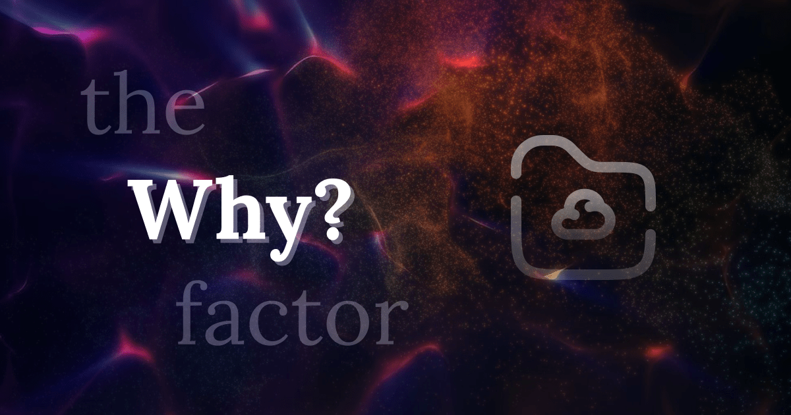

In my opinion, Framer is the best no-code and visual builder for the web out there. The possibilities feel limitless, and as a designer, I now rely much less on developers.
But then one day, I realized that if I keep going like this, I’ll soon be tied to an ecosystem, bound by their terms, rules and policies just to keep a website up and running. I wouldn’t even have control or access to the code of a project I spent my time on.
Please don’t take this the wrong way—it’s a great platform. But hey, take a look at this example. This is why I’m genuinely concerned about any kind of platform lock-in.
The one thing I fear about these no-code builder platforms is their pricing changes. They might also reduce bandwidth to push customers to higher plans. Context: Webflow updated their pricing along with some other changes.
— Romio (@romio.substack.com) July 16, 2024 at 1:26 AM
[image or embed]
So I explored, imagined, and created a lot of things. The interesting part is that I could see my growth. There are times when I feel everything is going south, so I take a moment, shut down the computer, and either go for a walk or play chess or engage in gardening. Then, I come back with a fresh mind, and I can tackle the issues in my projects or ideas I'm working on.
I write blogs or post on Bluesky about the key moments in this new journey. Here, I’m going to list everything in order. Each action leads to the next. I also created a Bluesky feed for it.
Aloha!
Concluded a start-up journey and refocusing myself.
https://romio.substack.com/p/aloha
Aug 14, 2023
0 ⇢ 1
From nothing to something.
https://romio.substack.com/p/houston-we-have-a-lift-off
Sep 02, 2023
Portfolio v5.0
The constant iteration helps me push myself forward.
https://romio.substack.com/p/portfolio
Sep 08, 2023
Welcome to Instances
Find what you need effortlessly and get things done!
https://romio.substack.com/p/welcome-to-instances
https://instances.framer.website/
Sep 29, 2023
Subscriptions vs one time
It'd be awesome if businesses dig deeper into these areas!
https://romio.substack.com/p/subscriptions-vs-one-time
This is why I’m planning to build one-time payment products only.
Oct 11, 2023
A risk or courage
The curious stage of finding what's next in my life and career. Going with the gut feeling is the only possible way I can see as of now.
https://romio.substack.com/p/a-risk-or-courage
Oct 30, 2023
Future of web experiences
I saw a video of a content-saving tool today. It created a lot of questions in my mind about the future of web.
https://romio.substack.com/p/future-of-web-experiences
Nov 09, 2023
I made a few Framer templates. But I never tried to market them. I continually tried to publish one after another, because I liked it. One thing I learned from this time is marketing and distribution are equally important as design development. #framer bit.ly/framer-templ...
— Romio (@romio.substack.com) December 4, 2023 at 3:37 PM
[image or embed]
Writing is a learning
What to write, and what not to write depends on us. In this post, I'm analyzing why I wanted to be an independent writer and not just a designer.
https://romio.substack.com/p/writing-is-a-learning
Dec 07, 2023
Social media migration
In search of a professional network, like-minded people, community, showcases, and opportunities.
https://romio.substack.com/p/social-media-migration
Dec 12, 2023
Exploring the cosmos: A look at various spacecraft
Learn about atmospheric probes, flybys, landers, orbiters, rovers, sample return missions, and more! This content was created using information from various sources, including NASA, Wikipedia, and space.com, and was fact checked and refined using AI tools. Every effort was made to present accurate and concise information.
https://romio.substack.com/p/exploring-space-different-types-spacecraft
Feb 02, 2024
A bold statement about AI, bridging the technology divide
NVIDIA Founder, President, and CEO Jensen Huang's key takeaways during the World Government Summit.
https://romio.substack.com/p/nvidia-ceo-jensen-huang-world-government-summit
Mar 01, 2024
- I’m in the curious phase now. A lot to search, find and learn. Thanks to the growth of AI.
Will AI interactions extend beyond the simple chat models?
The quest for seamless interaction with the multi-AI model continues.
https://romio.substack.com/p/ai-interactions-beyond-simple-chat-models
Mar 10, 2024
Software data ownership and portability
Open file formats, an interoperable ecosystem, and self-hosting options ensure we have the power to manage our digital assets on our own terms.
https://romio.substack.com/p/open-design-tools-data-ownership-portability
Mar 23, 2024
Repurpose your old laptop with Ubuntu or ChromeOS Flex
Instead of selling your old laptop for scrap or second-hand use, convert it into a lightweight system by installing either Ubuntu or ChromeOS Flex. This is where I stepped into the world of code.
https://romio.substack.com/p/repurpose-old-laptop-with-ubuntu-or-chromeosflex
May 09, 2024
Serene escapes
Video song made with Suno AI and Pexels video collection.
https://romio.substack.com/p/serene-escapes-made-with-suno
Jun 26, 2024
Free alternatives
Decentralize your tech stacks and join the open-source movement.
https://romio.substack.com/p/free-alternatives-decentralize-tech-open-source
Jul 05, 2024
Claude is really changing the game here (that's my perspective, but I'm open to others). Every day, I'm creating simple things with natural language that weren't possible just a few months ago, right?
— Romio (@romio.substack.com) July 12, 2024 at 12:06 PM
Run LLMs locally
How can I run LLMs on a mid-range consumer laptop?
https://romio.substack.com/p/how-to-run-llms-locally-ollama-lm-studio
Jul 25, 2024
RSS feeds
I believe it’s time to switch back to using RSS feeds instead of email subscriptions, but this option may not suit everyone, as some may find the setup a bit complex and unnecessary.
https://romio.substack.com/p/rss-feeds-vs-email-subscriptions
Sep 23, 2024
10,000 hours
Even projects that seem to go nowhere contribute to progress through exploration. It's about messing around and seeing what happens.
https://romio.substack.com/p/ai-assisted-learning-journey-10000-hours-snowball-effect
Oct 02, 2024

And now, there's this template. I have many more ideas and plan to build as much as I can.